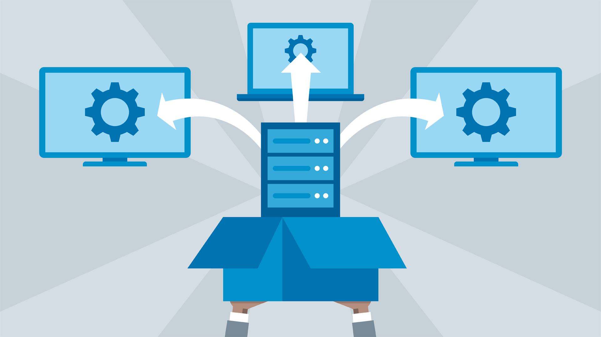

Getting Started with Go

If you're interested in backend development, Go (or Golang) is a powerful programming language to learn. In this blog post, we'll cover the basics of Go and how to get started with building backend applications using this language.
Working with PostgreSQL in Backend Development

PostgreSQL is a popular open-source relational database management system. In this blog post, we'll explore the fundamentals of using PostgreSQL in backend development, including database setup, querying data, and integrating it into your backend applications.
Deploying Backend Applications

Deploying backend applications is a crucial step in the development process. In this blog post, we'll discuss different deployment strategies and tools you can use to deploy your backend applications effectively, ensuring scalability, reliability, and performance.